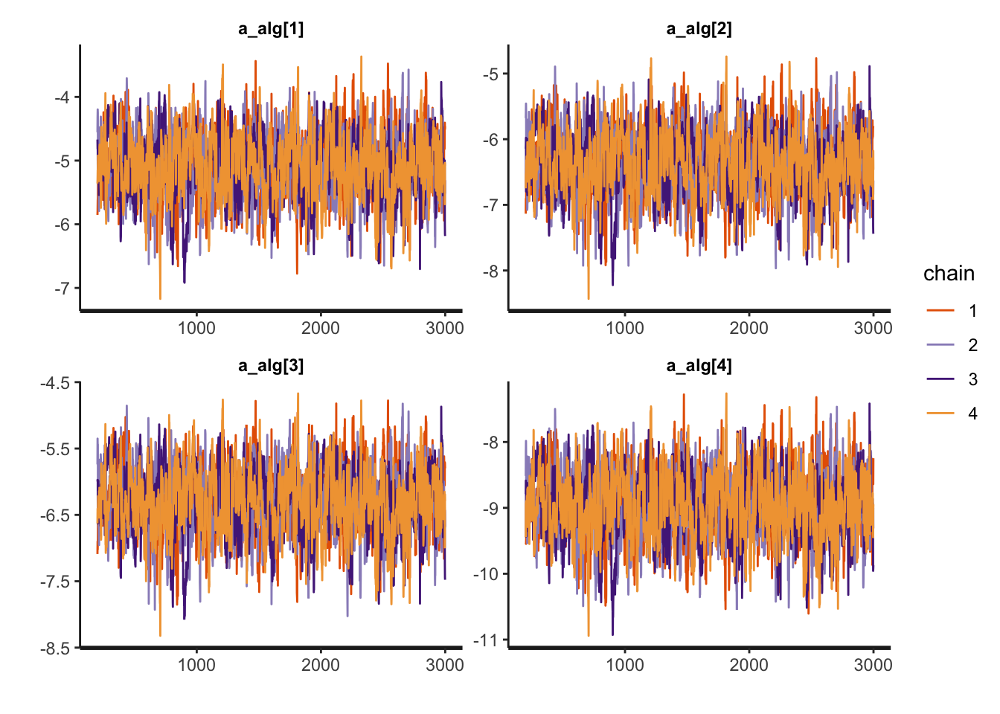
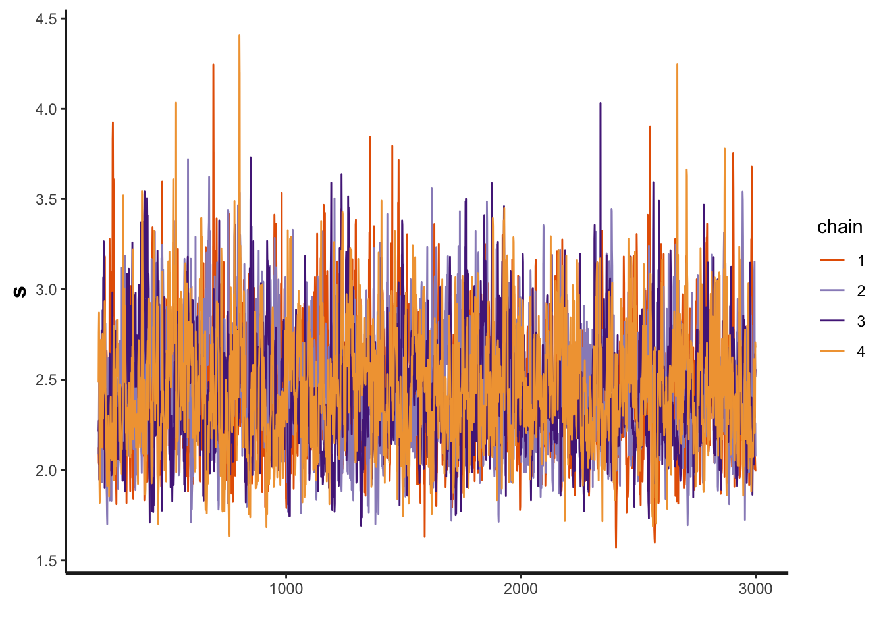

Chapter 5 Time to complete
In this section, we will consider the Cox’s Proportional Hazard model for analyzing the time to converge to a a solution (in number of iterations).
- RQ4-a: What is the average number of function evaluations taken by an algorithm to converge to a solution at a precision of \(\epsilon=0.1\), with a budget of 100,000 function evaluations per dimension?
- RQ4-b: What is the impact of noise in the number of function evaluations taken by an algorithm to converge to a solution at a precision of \(\epsilon=0.1\), with a budget of 100,000 function evaluations per dimension?
5.1 RQ4 Data preparation
We start importing the dataset
Filtering the data that we want and applying some transformations. The Event variable will indicate if it was censored or not.
d <- dataset %>%
dplyr::filter(OptimizationSuccessful==TRUE & MaxFevalPerDimensions==100000 & (Algorithm=="PSO"|Algorithm=="CMAES"|Algorithm=="DifferentialEvolution"|Algorithm=="RandomSearch2")) %>%
dplyr::select(Algorithm, CostFunction, Event="SolveAt1e-1", simNumber, Ndimensions, SD, SolvedAtIteration="SolveEarlierAt1e-1") %>%
dplyr::mutate(y=SolvedAtIteration/Ndimensions,
Event=as.integer(Event),
CostFunctionID=create_index(CostFunction),
AlgorithmID=create_index(Algorithm)) %>%
dplyr::select(Algorithm, AlgorithmID, CostFunction, CostFunctionID, SD, Event, y,-simNumber,-SolvedAtIteration, -Ndimensions)
algorithms<-get_index_names_as_array(d$Algorithm)
bm <- get_index_names_as_array(d$CostFunction)The data should look like this:
kable(dplyr::sample_n(d,size=10),"html", booktabs=T, format.args = list(scientific = FALSE), digits = 3) %>%
kable_styling(bootstrap_options = c("striped", "hover", "condensed"))| Algorithm | AlgorithmID | CostFunction | CostFunctionID | SD | Event | y |
|---|---|---|---|---|---|---|
| PSO | 3 | DiscusN2 | 6 | 0 | 1 | 44850.000 |
| RandomSearch2 | 4 | Schwefel2d26N6 | 19 | 0 | 0 | NA |
| DifferentialEvolution | 2 | ExponentialN2 | 7 | 3 | 0 | 0.500 |
| CMAES | 1 | DiscusN2 | 6 | 0 | 0 | NA |
| RandomSearch2 | 4 | Tripod | 27 | 3 | 0 | NA |
| CMAES | 1 | SphereN6 | 22 | 0 | 1 | 40.333 |
| PSO | 3 | WhitleyN6 | 28 | 3 | 0 | NA |
| CMAES | 1 | PinterN6 | 11 | 3 | 0 | NA |
| CMAES | 1 | SphereN6 | 22 | 3 | 0 | 46.667 |
| PSO | 3 | Schwefel2d23N6 | 18 | 3 | 0 | 237.833 |
5.2 RQ4 Stan model
The Stan model is specified in the file: './stanmodels/timetoconverge.stan'. Note that at the end of the model we commented the generated quantities. This block generates the predictive posterior y_rep and the log likelihood, log_lik. These values are useful in diagnosing and validating the model but the end file is extremely large (~1Gb for 2000 iterations) and make many of the following calculations slow. If the reader wants to see these values is just to uncomment and run the stan model again. Note also the the predictive posterior calculates for censored and non censored data. We can in r restrict and compare the predictive only to the non censored data or even censor it if the prediction is above the budget.
// Time to converge, Cox regression model
// Author: David Issa Mattos
// Date: 23 June 2020
//
//
data {
int <lower=1> N_total; // Sample size
real y[N_total]; // iteration where it was solved
int event[N_total]; // Indicates if the event occured or not
//To model each algorithm independently
int <lower=1> N_algorithm; // Number of algorithms
int algorithm_id[N_total]; //vector that has the id of each algorithm
//To model the influence of the noise
real x_noise[N_total];
//To model the influence of each benchmark
int <lower=1> N_bm;
int bm_id[N_total];
}
parameters {
//Fixed effect
real a_alg[N_algorithm];//the mean effect given by the algorithms
real b_noise[N_algorithm];//effect of noise
// //Random effect. The effect of the benchmarks
real a_bm_norm[N_bm];//the mean effect given by the base class type
real<lower=0> s;//std for the random effects
}
model {
//Fixed effect
a_alg ~ normal(0,10);
// //Random effects
s ~ exponential(0.1);
a_bm_norm ~ normal(0,1);
b_noise ~ normal(0,2);
for (i in 1:N_total)
{
//uncensored data
if(event[i]==1) target += exponential_lpdf(y[i] | exp(a_alg[algorithm_id[i]] + s*a_bm_norm[bm_id[i]] + b_noise[algorithm_id[i]]*x_noise[i]));
//censored data
if(event[i]==0) target += exponential_lccdf(y[i] | exp(a_alg[algorithm_id[i]] + s*a_bm_norm[bm_id[i]] + b_noise[algorithm_id[i]]*x_noise[i]));
}
}
//Uncoment this part to get the posterior predictives and the log likelihood
//But note that it takes a lot of space in the final model
// //Here we suppose that the predictive data will not be censored.
// //But if it is above the budget we can censor it later
// generated quantities{
// vector [N_total] y_rep;
// vector[N_total] log_lik;
//
// for(i in 1:N_total){
// real mu;
// mu = a_alg[algorithm_id[i]] + s*a_bm_norm[bm_id[i]] + b_noise[algorithm_id[i]]*x_noise[i];
// y_rep[i]= exponential_rng(mu);
//
// //uncensored data
// if(event[i]==1) log_lik[i]= exponential_lpdf(y[i] | exp(a_alg[algorithm_id[i]] + s*a_bm_norm[bm_id[i]] + b_noise[algorithm_id[i]]*x_noise[i]));
// //censored data
// if(event[i]==0) log_lik[i]= exponential_lccdf(y[i] | exp(a_alg[algorithm_id[i]] + s*a_bm_norm[bm_id[i]] + b_noise[algorithm_id[i]]*x_noise[i]));
// }
// }Let’s compile and start sampling with the Stan function. In the data folder you can find the specific data used to fit the model after all transformations "./data/timetoconverge-data.RDS"
Note that stan does not support NA in the data, so we have two options… We either replace NA for a value and add conditionals in the model (note that this value will not be used). Or we separate the data frame in two parts, censored and not not-censored. We will do the first approach replacing the NA by 0.
dstan<-d %>%
dplyr::mutate(y=replace_na(y,0))
standata <- list(
N_total=nrow(dstan),
y = dstan$y,
event = dstan$Event,
x_noise = d$SD,
N_algorithm = length(algorithms),
algorithm_id = dstan$AlgorithmID,
N_bm = length(bm),
bm_id = d$CostFunctionID
)
saveRDS(standata, file = "./data/timetoconverge-data.RDS")For computation time sake we are not running this chunk every time we compile this document. From now on we will load from the saved Stan fit object. However, when we change our model or the data we can just run this chunk separately
5.3 RQ4 Diagnosis
a_alg <- c("a_alg[1]",
"a_alg[2]",
"a_alg[3]",
"a_alg[4]")
b_noise <- c("b_noise[1]",
"b_noise[2]",
"b_noise[3]",
"b_noise[4]")
rstan::traceplot(timetoconverge_fit, pars=a_alg)


Another diagnosis is to look at the Rhat. If Rhat is greater than 1.05 it indicates a divergence in the chains (they did not mix well). The table below shows a summary of the sampling.
kable(summary(timetoconverge_fit)$summary) %>%
kable_styling(bootstrap_options = c('striped',"hover", "condensed" ))| mean | se_mean | sd | 2.5% | 25% | 50% | 75% | 97.5% | n_eff | Rhat | |
|---|---|---|---|---|---|---|---|---|---|---|
| a_alg[1] | -5.0876436 | 0.0163450 | 0.4749516 | -6.1009042 | -5.3879902 | -5.0723454 | -4.7666194 | -4.1983810 | 844.3647 | 1.0029185 |
| a_alg[2] | -6.3679581 | 0.0164399 | 0.4729020 | -7.3803595 | -6.6721314 | -6.3496253 | -6.0462865 | -5.4849112 | 827.4495 | 1.0028510 |
| a_alg[3] | -6.3007230 | 0.0163282 | 0.4719901 | -7.2941107 | -6.6024358 | -6.2839196 | -5.9799940 | -5.4202570 | 835.5808 | 1.0028738 |
| a_alg[4] | -8.9508434 | 0.0163599 | 0.4804615 | -9.9725014 | -9.2629771 | -8.9396770 | -8.6226019 | -8.0575120 | 862.4938 | 1.0026451 |
| b_noise[1] | -0.7873706 | 0.0007192 | 0.0690586 | -0.9271111 | -0.8327514 | -0.7860082 | -0.7407884 | -0.6560111 | 9220.2337 | 0.9999166 |
| b_noise[2] | -0.9589087 | 0.0007239 | 0.0650844 | -1.0877326 | -1.0024880 | -0.9586410 | -0.9135975 | -0.8360297 | 8083.6928 | 0.9996969 |
| b_noise[3] | -0.6783821 | 0.0006466 | 0.0620621 | -0.8025203 | -0.7202606 | -0.6769984 | -0.6373789 | -0.5589440 | 9212.0256 | 1.0003974 |
| b_noise[4] | -0.4101144 | 0.0007183 | 0.0699979 | -0.5541200 | -0.4556815 | -0.4092248 | -0.3627118 | -0.2753365 | 9497.4239 | 1.0001411 |
| a_bm_norm[1] | -0.7041758 | 0.0074050 | 0.2440880 | -1.1894131 | -0.8657688 | -0.7055417 | -0.5392809 | -0.2269247 | 1086.5259 | 1.0020074 |
| a_bm_norm[2] | -0.5818895 | 0.0073780 | 0.4270480 | -1.5191613 | -0.8418573 | -0.5479411 | -0.2833611 | 0.1484277 | 3350.2487 | 1.0006340 |
| a_bm_norm[3] | -0.6352680 | 0.0072651 | 0.2320169 | -1.0878214 | -0.7884735 | -0.6381949 | -0.4805968 | -0.1731862 | 1019.9047 | 1.0019516 |
| a_bm_norm[4] | 0.0368664 | 0.0067509 | 0.1986395 | -0.3358272 | -0.1013126 | 0.0323551 | 0.1679413 | 0.4523768 | 865.7858 | 1.0024907 |
| a_bm_norm[5] | -0.7091761 | 0.0073280 | 0.2940958 | -1.3154960 | -0.8957398 | -0.6995976 | -0.5110043 | -0.1537985 | 1610.6609 | 1.0011429 |
| a_bm_norm[6] | -0.9853524 | 0.0078730 | 0.2463757 | -1.4710094 | -1.1489153 | -0.9852357 | -0.8255646 | -0.4912610 | 979.2990 | 1.0026001 |
| a_bm_norm[7] | 2.7705694 | 0.0107276 | 0.4115945 | 1.9929088 | 2.4867064 | 2.7579232 | 3.0485064 | 3.5979627 | 1472.0983 | 1.0012395 |
| a_bm_norm[8] | 1.7905731 | 0.0084627 | 0.3045386 | 1.2072707 | 1.5803690 | 1.7814323 | 1.9964897 | 2.3985149 | 1294.9769 | 1.0017889 |
| a_bm_norm[9] | 0.0020454 | 0.0111730 | 1.0044252 | -1.9297168 | -0.6878567 | -0.0082880 | 0.6849401 | 1.9679818 | 8081.5821 | 0.9998849 |
| a_bm_norm[10] | -0.4393476 | 0.0071129 | 0.2114526 | -0.8364776 | -0.5832773 | -0.4466005 | -0.2994468 | -0.0016197 | 883.7470 | 1.0028639 |
| a_bm_norm[11] | -0.5384238 | 0.0071635 | 0.2390311 | -1.0120373 | -0.6926342 | -0.5387878 | -0.3808905 | -0.0640232 | 1113.4031 | 1.0021580 |
| a_bm_norm[12] | 0.9383982 | 0.0071315 | 0.2320267 | 0.4989064 | 0.7778547 | 0.9321981 | 1.0941525 | 1.4067974 | 1058.5545 | 1.0023799 |
| a_bm_norm[13] | -0.1434221 | 0.0068078 | 0.2063970 | -0.5319042 | -0.2860761 | -0.1480169 | -0.0075512 | 0.2832601 | 919.1634 | 1.0029467 |
| a_bm_norm[14] | -0.5726918 | 0.0072433 | 0.2264003 | -1.0093800 | -0.7224609 | -0.5778708 | -0.4215351 | -0.1147686 | 976.9795 | 1.0022757 |
| a_bm_norm[15] | -0.5973401 | 0.0071526 | 0.2234751 | -1.0297154 | -0.7474412 | -0.6036431 | -0.4493756 | -0.1442324 | 976.1780 | 1.0021256 |
| a_bm_norm[16] | -0.1502131 | 0.0067989 | 0.2036326 | -0.5376026 | -0.2904790 | -0.1557584 | -0.0157417 | 0.2663880 | 897.0410 | 1.0028733 |
| a_bm_norm[17] | -0.8350260 | 0.0076364 | 0.2334681 | -1.2874667 | -0.9917736 | -0.8379554 | -0.6810848 | -0.3605677 | 934.7052 | 1.0024115 |
| a_bm_norm[18] | 0.2081051 | 0.0066556 | 0.2005683 | -0.1665740 | 0.0669625 | 0.2033960 | 0.3401691 | 0.6170056 | 908.1384 | 1.0030978 |
| a_bm_norm[19] | -0.5037260 | 0.0075471 | 0.3074640 | -1.1386899 | -0.7012929 | -0.4932808 | -0.2909143 | 0.0670852 | 1659.6929 | 1.0021561 |
| a_bm_norm[20] | -0.4077283 | 0.0070541 | 0.2170846 | -0.8231301 | -0.5541845 | -0.4122319 | -0.2635899 | 0.0353661 | 947.0569 | 1.0032213 |
| a_bm_norm[21] | -0.5961393 | 0.0071996 | 0.2185068 | -1.0155647 | -0.7439766 | -0.5974407 | -0.4536867 | -0.1544017 | 921.1054 | 1.0023679 |
| a_bm_norm[22] | 0.8260845 | 0.0069766 | 0.2283002 | 0.3954488 | 0.6672539 | 0.8183983 | 0.9790294 | 1.2938929 | 1070.8364 | 1.0025092 |
| a_bm_norm[23] | -0.5486623 | 0.0071808 | 0.2228906 | -0.9827855 | -0.6989598 | -0.5537703 | -0.3993232 | -0.0914536 | 963.4607 | 1.0023567 |
| a_bm_norm[24] | 0.8638508 | 0.0070587 | 0.2284265 | 0.4350897 | 0.7051429 | 0.8585957 | 1.0158818 | 1.3288395 | 1047.2288 | 1.0021541 |
| a_bm_norm[25] | -1.0517292 | 0.0078211 | 0.2523898 | -1.5458927 | -1.2180663 | -1.0537688 | -0.8854221 | -0.5519734 | 1041.3668 | 1.0017377 |
| a_bm_norm[26] | 2.1795035 | 0.0093341 | 0.3456007 | 1.5244836 | 1.9441663 | 2.1689410 | 2.4116865 | 2.8699751 | 1370.9012 | 1.0015402 |
| a_bm_norm[27] | -0.3155189 | 0.0070174 | 0.2250988 | -0.7440751 | -0.4691298 | -0.3204429 | -0.1644169 | 0.1370003 | 1028.9402 | 1.0024098 |
| a_bm_norm[28] | -0.8538050 | 0.0074970 | 0.4198744 | -1.7782993 | -1.1090358 | -0.8195746 | -0.5620716 | -0.1229214 | 3136.6107 | 0.9999658 |
| a_bm_norm[29] | 0.3213962 | 0.0067173 | 0.2081710 | -0.0685415 | 0.1780737 | 0.3146147 | 0.4584381 | 0.7477982 | 960.3955 | 1.0022376 |
| a_bm_norm[30] | 0.8008738 | 0.0069773 | 0.2245934 | 0.3818617 | 0.6456976 | 0.7942260 | 0.9504745 | 1.2578285 | 1036.1382 | 1.0025364 |
| s | 2.4428738 | 0.0081690 | 0.3319133 | 1.8958297 | 2.2045872 | 2.4095331 | 2.6429476 | 3.1826092 | 1650.8714 | 1.0009461 |
| lp__ | -5467.9684851 | 0.1284895 | 5.5912387 | -5479.8300452 | -5471.5617575 | -5467.6665614 | -5464.0459719 | -5457.9444212 | 1893.5662 | 1.0007111 |
5.4 RQ4 Results and Plots
5.4.1 RQ4 Parameters and plots
First lets get the HPDI of every parameter.
Then we restrict to the algorithms, them to the slopes, then to the parameter s
hpdi <- get_HPDI_from_stanfit(timetoconverge_fit)
hpdi_algorithm <- hpdi %>%
dplyr::filter(str_detect(Parameter, "a_alg\\[")) %>%
dplyr::mutate(Parameter=algorithms) #Changing to the algorithms labels
hpdi_noise<- hpdi %>%
dplyr::filter(str_detect(Parameter, "b_noise\\[")) %>%
dplyr::mutate(Parameter=algorithms) #Changing to the algorithms labels
hpdi_s <- hpdi %>%
dplyr::filter(Parameter=='s')
p_alg<-ggplot(data=hpdi_algorithm, aes(x=Parameter))+
geom_pointrange(aes(
ymin=HPDI.lower,
ymax=HPDI.higher,
y=Mean))+
labs(y="a_alg", x="Algorithm")+
coord_flip()
p_alg + plot_annotation(title = 'HPDI interval for the algorithms')
p_noise<-ggplot(data=hpdi_noise, aes(x=Parameter))+
geom_pointrange(aes(
ymin=HPDI.lower,
ymax=HPDI.higher,
y=Mean))+
labs(y="b_noise", x="Algorithm")+
coord_flip()
p_noise + plot_annotation(title = 'HPDI interval for noise coefficient')
p_s <- ggplot(data=hpdi_s, aes(x=Parameter))+
geom_pointrange(aes(
ymin=HPDI.lower,
ymax=HPDI.higher,
y=Mean))+
labs(y="Estimate of s", x="Parameter")+
coord_flip()
p_s + plot_annotation(title = 'HPDI interval std of the benchmarks')
5.4.2 Hazard ratio
hr_table <- tibble(
"Algorithms" = algorithms,
"Baseline HR" = exp(hpdi_algorithm$Mean),
"Noise HR" = exp(hpdi_noise$Mean))
kable(hr_table, booktabs=T, format.args = list(scientific = FALSE), digits = 3) %>%
kable_styling(bootstrap_options = c("striped", "hover", "condensed"))| Algorithms | Baseline HR | Noise HR |
|---|---|---|
| CMAES | 0.006 | 0.455 |
| DifferentialEvolution | 0.002 | 0.383 |
| PSO | 0.002 | 0.507 |
| RandomSearch2 | 0.000 | 0.664 |
5.4.3 Iterations to Converge
To obtain the average iteration to converge we first extract samples from the posterior distribution
Looking at the average value of the data regardless of the benchmarks
# A tibble: 4 x 2
Algorithm Mean
<chr> <dbl>
1 CMAES 115.
2 DifferentialEvolution 3340.
3 PSO 2406.
4 RandomSearch2 12129.posterior <- rstan::extract(timetoconverge_fit)
a <- as_tibble(posterior$a_alg)
colnames(a) <- algorithms
lambda <- exp(a)
mu <- 1/lambda
#Creating a HPD table
timetoconverge_table<-as_tibble(HDInterval::hdi(mu,credMass=0.95), rownames = "Metric") %>%
tibble::add_row(Metric="Mean",CMAES=mean(mu$CMAES), DifferentialEvolution=mean(mu$DifferentialEvolution), PSO=mean(mu$PSO), RandomSearch2=mean(mu$RandomSearch2)) %>%
tidyr::pivot_longer(cols=-Metric,names_to = 'Algorithms', values_to='values') %>%
tidyr::pivot_wider(names_from =Metric , values_from=values) %>%
dplyr::rename(Mean=Mean,
'HPD low' = lower,
'HPD high' = upper) %>%
dplyr::relocate(Algorithms, Mean)
saveRDS(timetoconverge_table, './statscomp-paper/tables/datafortables/averagetimetoconverge.RDS')5.4.4 Merging hazards and time to converge table
5.4.5 Parameter table
rename_pars <- c(paste(rep('a_',length(algorithms)),algorithms, sep = ""), paste(rep('b_',length(algorithms)),algorithms, sep = ""),'s')
t<-create_table_model(timetoconverge_fit, c(a_alg, b_noise, 's'), rename_pars)
colnames(t)<-c("Parameter", "Mean", "HPD low", "HPD high")
saveRDS(t,'./statscomp-paper/tables/datafortables/timetoconverge-hr-par-table.RDS')